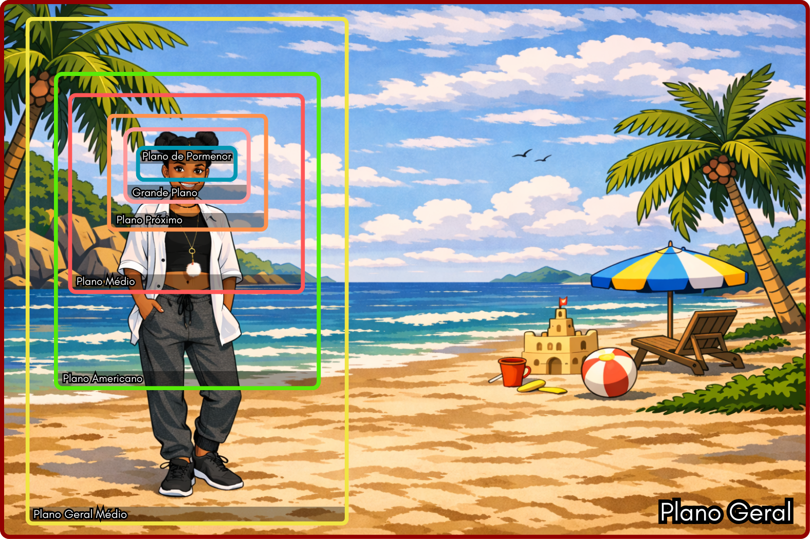
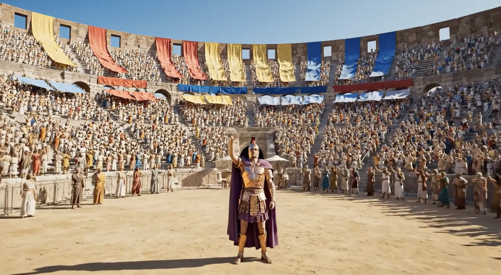
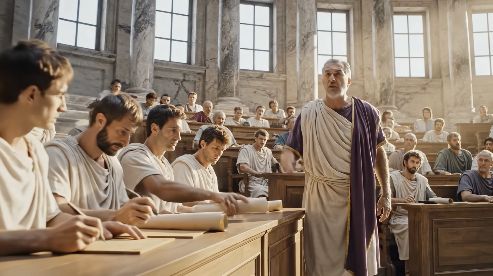
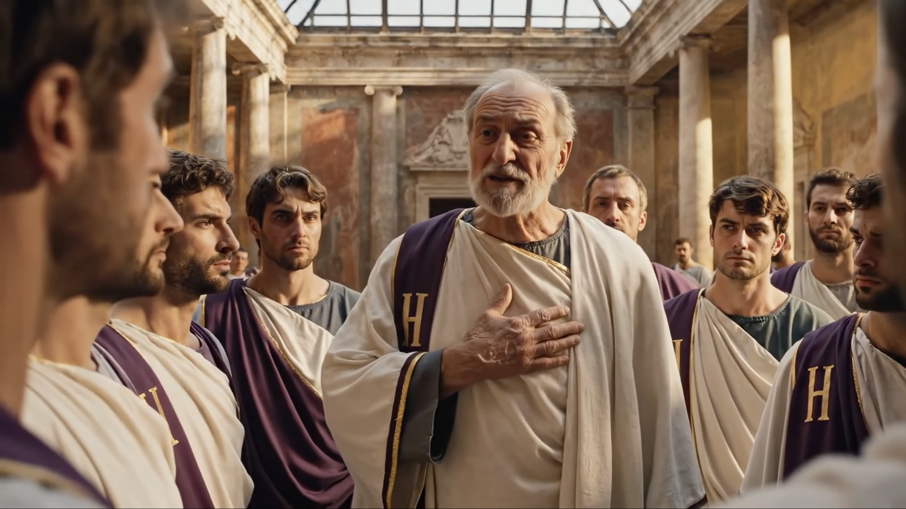
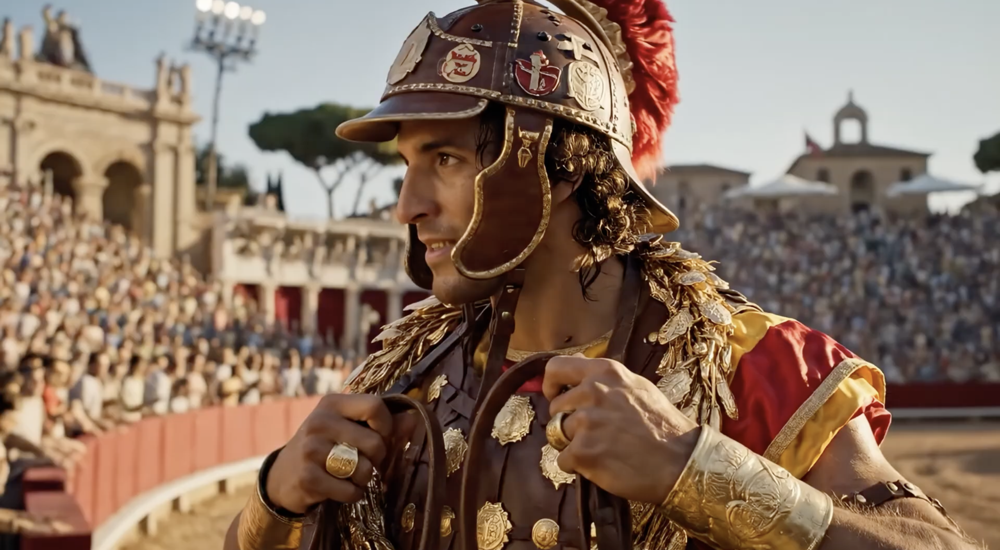
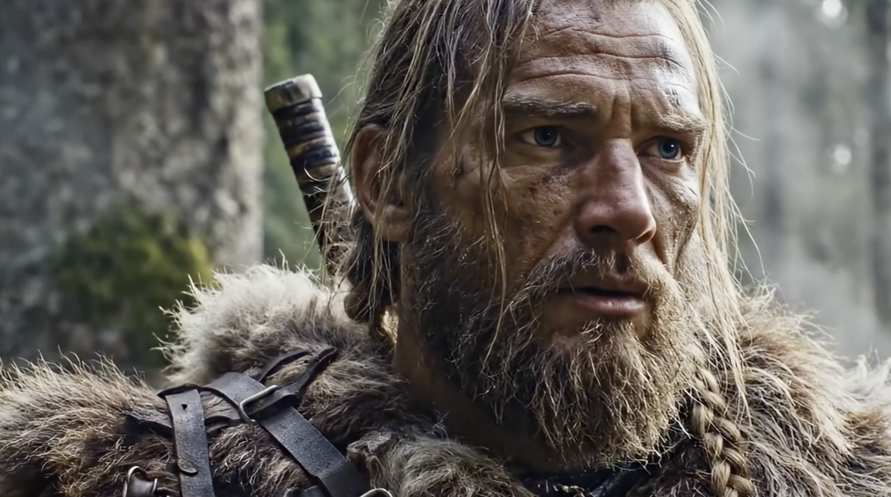
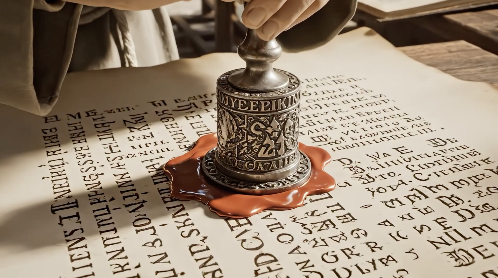

Planos
Enquadramentos
Os planos são a escolha da quantidade de cena que aparece na imagem - do plano geral, que mostra o contexto, ao plano próximo, que destaca detalhes e emoção.
=======Planos
Enquadramentos
Os planos são a escolha da quantidade de cena que aparece na imagem - do plano geral, que mostra o contexto, ao plano próximo, que destaca detalhes e emoção.
>>>>>>> 7466caa5bdd55d07d11fd6607d45df501a3e16cbIdeia-chave
Um plano ajuda-te a dosar a informação numa imagem: quanto mais afastada está a câmara, mais descreves o espaço; quanto mais te aproximas, mais destacas emoções e detalhes.
- Planos gerais - são mais descritivos: situam o lugar e criam uma leitura mais "respirada".
- Planos médios - têm valor narrativo: mostram ação e relação entre personagens, sem perder o contexto.
- Planos próximos - são expressivos: aproximam-nos do rosto ou do detalhe e tornam a imagem mais íntima.
Regra prática: quanto mais pormenor, mais tempo o espectador precisa para "ler" a imagem; quanto mais geral, mais rápida é a leitura.
Esquema
Consulta o esquema para perceberes o enquadramento dos planos.

Plano Geral
Mostra o espaço e o contexto.
Leitura: breve (capta-se rápido o contexto).

Plano Geral Médio
Equilibra sujeito e contexto.
Leitura: média (há mais informação a observar).

Plano Americano
Bom para ação/atitude (até ao joelho).
Leitura: média a longa (ação + detalhes do grupo).

Plano Médio
Para diálogo/gesto (até à cintura).
Leitura: média (bom para diálogo e gesto).

Plano Próximo (Médio Curto)
Mais emoção/expressão (peito/ombros).
Leitura: longa (a expressão e os detalhes pedem mais atenção).

Grande Plano
Expressão intensa (rosto domina).
Leitura: variável (depende do impacto que queres dar).

Plano de Pormenor
Detalhe significativo (mãos/objeto/olhos).
Leitura: breve (um detalhe - impacto direto).

Mini‑tarefa
Realiza a tarefa em fotografia e em vídeo: no total, produz 3 fotografias e 3 vídeos. No conjunto final, todos os planos têm de estar representados.
- Fotografia (3): cada fotografia deve mostrar um plano diferente, bem identificado pelo enquadramento (ex.: geral, médio, grande plano, etc.).
- Vídeo (3): grava 3 vídeos aplicando os planos que não ficaram representados nas fotografias (ou seja, os planos “em falta” após as 3 fotos). Assim, ao juntar fotografias + vídeos, ficam todos os planos cobertos.
Mantém, sempre que possível, o mesmo motivo/cenário para facilitar a comparação entre planos.
Mini‑tarefa
Realiza a tarefa em fotografia e em vídeo: no total, produz 3 fotografias e 3 vídeos. No conjunto final, todos os planos têm de estar representados.
- Fotografia (3): cada fotografia deve mostrar um plano diferente, bem identificado pelo enquadramento (ex.: geral, médio, grande plano, etc.).
- Vídeo (3): grava 3 vídeos aplicando os planos que não ficaram representados nas fotografias (ou seja, os planos “em falta” após as 3 fotos). Assim, ao juntar fotografias + vídeos, ficam todos os planos cobertos.
Mantém, sempre que possível, o mesmo motivo/cenário para facilitar a comparação entre planos.